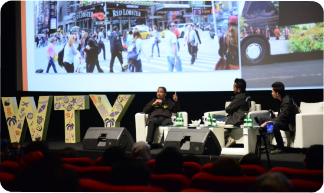

Kolaborasi Anak Muda dan Teknologi, Majukan Pariwisata
Sumber daya manusia (SDM) merupakan peran utama dalam kemajuan bangsa. Demikian disampaikan Menpar Arief Yahya, pada talkshow “Youth x Public Figure: Bapak Arief Yahya x Erix Soekamti" di XXI Epicentrum Studio I, Jakarta, Jumat (29/6/2018). “Yang membedakan satu bangsa dengan bangsa yang lain adalah manusianya. Yang membedakan manusia dengan manusia lainnya adalah karakter dan kompetensinya,” kata Menpar Arief.Para anak muda atau sering disebut generasi millenials, berperan penting dalam kemajuan pariwisata Indonesia. Apalagi sebagian besar anak muda merupakan technology savvy yang update perkembangan teknologi terbaru.
Kolaborasi antara anak muda dan teknologi, seperti kamera hp, instagram, dan inilah yang memberikan impact besar dalam pariwisata. “Gunakanlah teknologi utk menghadapi tantangan-tantangan fisik (pada pariwisata),” kata Menpar Arief. Menyadari besarnya pengaruh anak muda, Menpar Arief menantang anak muda Indonesia untuk ikut terlibat dalam perkembangan yang sedang dilakukan."Kemenpar tengah mengembangkan program strategis pariwisata yang melibatkan anak muda, yaitu destinasi digital dan nomandic tourism.
Dua program ini sebagai strategi untuk merebut wisman yang tahun ini ditargetkan 17 juta wisman dan 20 juta wisman pada 2019. Sekarang saya challengecy. kalian untuk ikut membuatnya," ujar Menpar Arief. Menpar Arief Yahya mengatakan, destinasi digital adalah destinasi yang populer di dunia maya, _viral_ di media sosial, dan _hits_ di Instagram. Sementara _nomadic tourism_, kata Menpar Arief, sebagai solusi dalam mengatasi keterbasan unsur 3 A (atraksi, amenitas, dan aksesibilitas). Khususnya untuk sarana amenitas atau akomodasi yang sifatnya bisa dipindah-pindah dan bentuknya bermacam-macam seperti glamp camp, home pod, dan karavan.